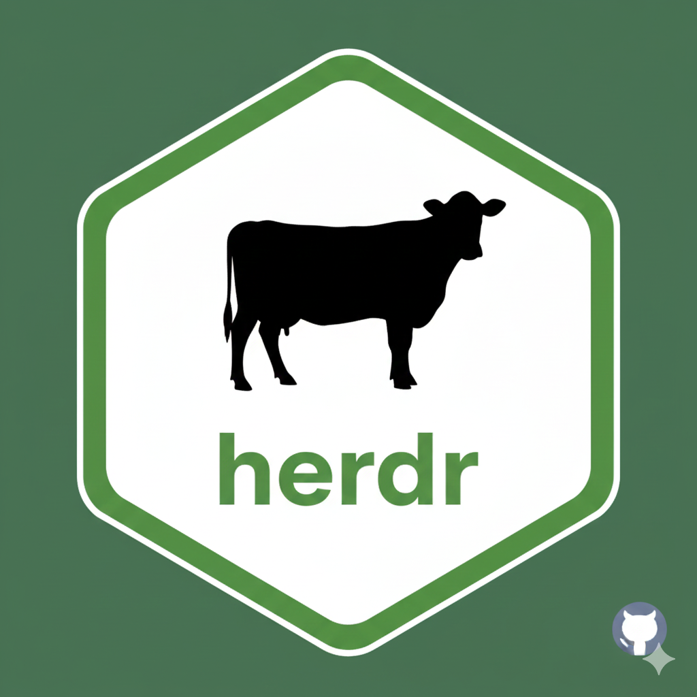

Calculate direct N2O emissions from manure
calculate_N2O_direct_manure.RdComputes direct N2O emissions based on nitrogen excretion logic, emission factors, management system, and climate (IPCC Eq 10.25).

calculate_N2O_direct_manure.RdComputes direct N2O emissions based on nitrogen excretion logic, emission factors, management system, and climate (IPCC Eq 10.25).